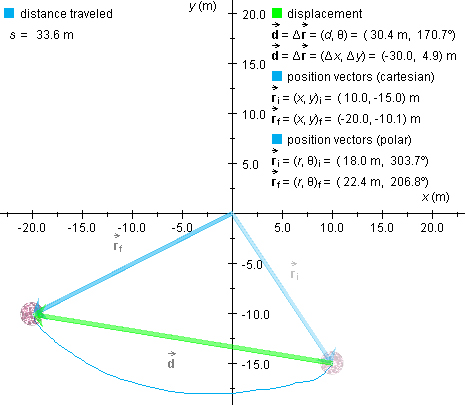

i =
(x,y)i = (10.0,-15.0) m to the final
position f =
(x,y)f = (-20.0,-10.1) m along the curved
path shown in blue. The green arrow represents the ball's
displacement
i =
(x,y)i = (10.0,-15.0) m to the final
position f =
(x,y)f = (-20.0,-10.1) m along the curved
path shown in blue. The green arrow represents the ball's
displacement  .
.

The diagram shows a ball that has been moved from the initial
position i =
(x,y)i = (10.0,-15.0) m to the final
position f =
(x,y)f = (-20.0,-10.1) m along the curved
path shown in blue. The green arrow represents the ball's
displacement .
The distance traveled by the ball is measured along the path taken by the ball and is equal to the length of the blue curve in the diagram. Distance traveled is often denoted by the symbol s. This is the notation used in MAP.
In the example shown in the diagram, s is equal to
s = 33.6 m .
The distance traveled must be distinguished from the straight-line distance between the initial and final positions of the ball. When one talks of the distance between two points, one usually means the straight-line distance unless it is clear from the context that one means the distance along some curved path connecting the points.
The straight-line distance between the initial and final positions of the ball is equal to the magnitude d of the ball's displacement and is denoted by the symbol d as well.
In the case illustrated above, d has the value
d = 30.4 m .
d is less than s whenever the path traveled is curved. A straight line is the shortest connection between two points.